Siyuan Ma / Sim2Real Evaluation
DataFarm-style Sim2Real Video Evaluation Demo
A static demo for checking whether a rendered video follows the simulator episode before judging appearance realism.
This page mirrors the DataFarm split: Motion and Structure check consistency with the simulator, Jumps catches seams, and flow diagnostics inspect moving pixels. KID/JEDi require a real-camera reference pool, so this synthetic two-video demo reports them as N/A.
Summary
| Case | Motion | Structure | Jumps | Flow error | Flow agreement | KID | JEDi | Expected signal |
|---|---|---|---|---|---|---|---|---|
| good_render | 0.993 | 0.737 | 0.0 | 0.024 | 0.779 | N/A | N/A | same geometry/motion, more camera-like appearance |
| motion_wrong | 0.598 | 0.288 | 0.0 | 0.123 | 0.004 | N/A | N/A | motion should drop and flow error should rise |
| structure_wrong | 0.993 | 0.610 | 0.0 | 0.025 | 0.762 | N/A | N/A | phantom object/arm should lower structure and need reject review |
| jump_wrong | 0.097 | 0.451 | 10.5 | 0.057 | 0.492 | N/A | N/A | mid-video seam should increase jumps |
good render
same geometry/motion, more camera-like appearance
- Motion0.993higher is better
- Structure0.737higher is better
- Jumps0.0lower is better
- Flow error0.024lower is better
- Flow agreement0.779higher is better
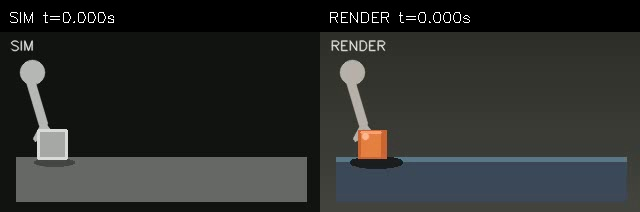
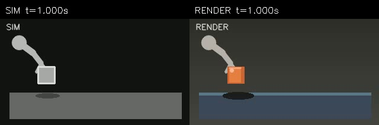
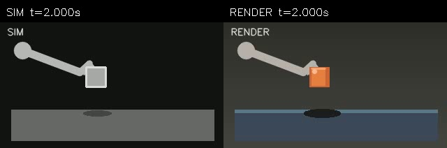
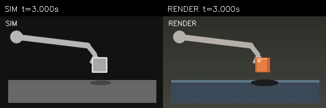
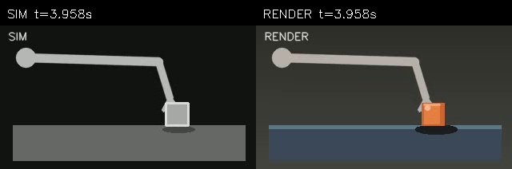
motion wrong
motion should drop and flow error should rise
- Motion0.598higher is better
- Structure0.288higher is better
- Jumps0.0lower is better
- Flow error0.123lower is better
- Flow agreement0.004higher is better
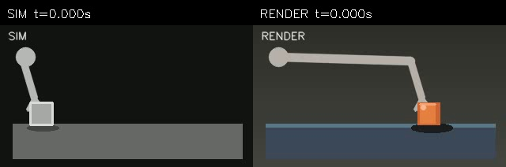
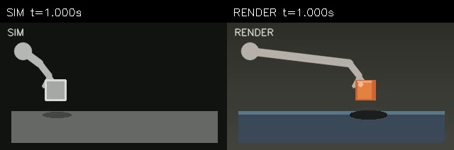

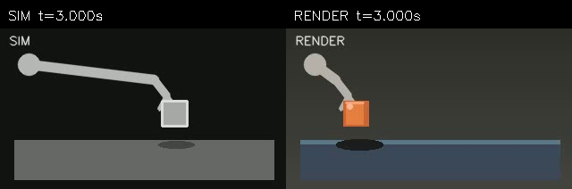
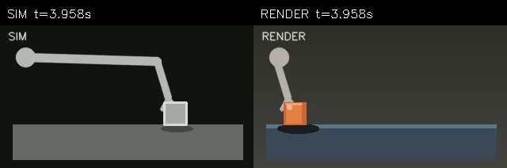
structure wrong
phantom object/arm should lower structure and need reject review
- Motion0.993higher is better
- Structure0.610higher is better
- Jumps0.0lower is better
- Flow error0.025lower is better
- Flow agreement0.762higher is better
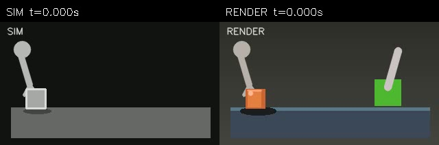
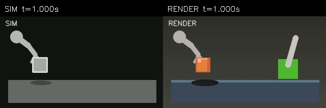
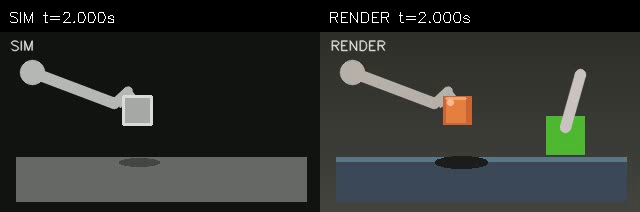
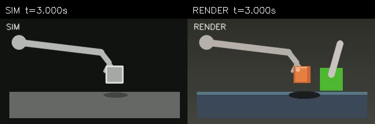
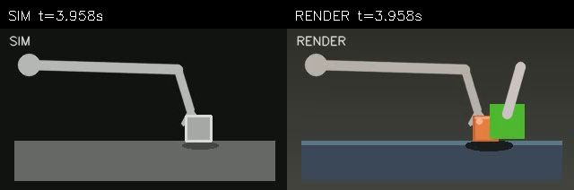
jump wrong
mid-video seam should increase jumps
- Motion0.097higher is better
- Structure0.451higher is better
- Jumps10.5lower is better
- Flow error0.057lower is better
- Flow agreement0.492higher is better


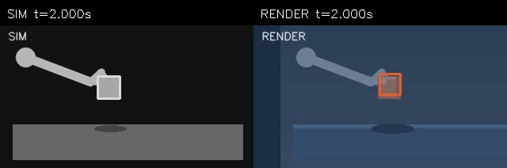
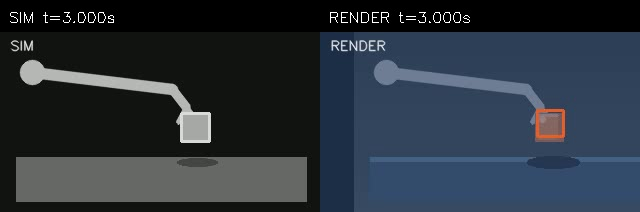
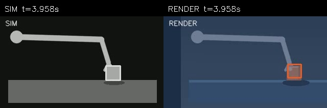
Implementation Notes
The demo uses CPU OpenCV/Farneback diagnostics as a smoke test. A benchmark run should freeze a stronger optical-flow or feature stack, add real-camera KID/JEDi when a reference pool exists; until then they should remain N/A, and hard reject cases stay separate from averaged scores.